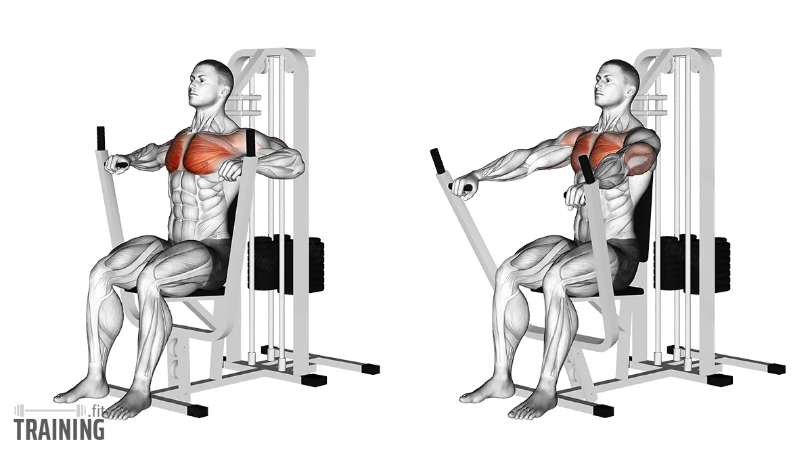

Esecuzione chest press

Cosa è la chest press machine?
La chest press machine è una macchina isotonica concepita per eseguire il gesto multiarticolare di distensione del braccio con sovraccarico, utile soprattutto nel rinforzo del gran pettorale, ma che coinvolge anche il tricipite brachiale e il deltoide/spalla anteriore.
La funzione della chest press machine è quella di rimpiazzare o simulare – per quanto possibile – il movimento delle distensioni su panca (con bilanciere o manubri), oppure di complementare la routine allenante per i suddetti gruppi muscolari.
La chest press machine viene quindi impiegata soprattutto nell'ambito del bodybuilding, ma può costituire una soluzione alternativa, o specifica per particolari esigenze, anche nella pratica di discipline sportive che richiedono lo sviluppo di forza o ipertrofia.
Come eseguirla in modo corretto?
Vediamo i passi fondamentali all'esecuzione soddisfacente, in termini di sicurezza e prestazione, delle distensioni su chest press orizzontale:
- Il primo passo è quello di regolare l'altezza della seduta; al momento della contrazione eccentrica massima, l'impugnatura dovrebbe virtualmente giungere a toccare la porzione bassa dello sterno. Questo ovviamente non avviene, perché le due impugnature sono separate tra loro; ma se ci fosse un bilanciere, questa sarebbe l'altezza giusta.
- L'impugnatura può variare in larghezza e in prono-supinazione. Per lo sviluppo ottimale del gran pettorale, si consiglia di adottare un'impugnatura prona o ruotata in supinazione di massimo 45°. La larghezza deve consentire, in massima posizione eccentrica, di far cadere l'omero in maniera perpendicolare rispetto alla verticale del petto. Stringendola e abbassandola si recluteranno di più il petto basso e il tricipite brachiale; allagandola invece, il tricipite lavora meno, ma la spinta è scomoda e poco efficacie in termini di forza.
- Specificando che, anche nella chest press machine, è indispensabile saper "gestire le scapole" per ottimizzare la spinta. Queste vanno attivate per adduzione e depressione, in modo da garantire un'efficacia maggiore della spinta e una superiore stabilità della spalla.
- Ottenuta la posizione corretta e regolato il sovraccarico, si inizia la distensione (eventualmente facilitando lo stacco grazie alla leva di assistenza dedicata). È bene fare attenzione a mantenere una postura globalmente composta, soprattutto del tratto cervicale. Si applica una forza uniforme fino alla massima estensione dei gomiti e, da qui, si ritorna in maniera altrettanto controllata al petto per eseguire la rep successiva.